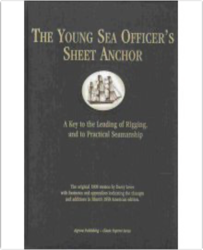
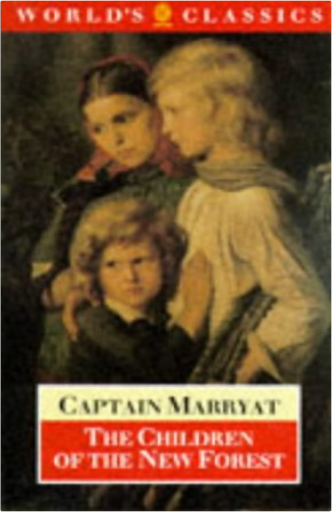

 The Young Sea Officer's Sheet Anchor, or a Key to the Leading of Rigging and to Practical SeamanshipDarcy Lever  0921335717 Remembering BabylonDavid Malouf A searing and magnificent picture of Australia at the moment of its foundation, with early settlers staking out their small patch of land and terrified by the harsh and alien continent. Focussing on the hostility between the early British inhabitants and the native Aboriginals. REMEMBERING BABYLON tells the tragic and compelling story of a boy who finds himself caught between the two worlds. Shot through with humour, and written with the poetic intensity that characterised Malouf's AN IMAGINARY LIFE this is the novel of epic scope yet it is simple, compassionate and universal: a classic. |  The Children of the New ForestFrederick Marryat, Dennis Butts In The Children of the New Forest, Marryat describes the trials and triumphs of the four Beverley children, orphaned during the English Civil War and forced to take refuge with a poor woodsman in the New Forest. This is the first annotated edition of a great children's classic, which has retained its popularity since 1847. The world is in flames . . .You look behind - there's nothing but smoke.Ahead of you the future has just burst into flames.Your life is on fire. The world's an inferno.You're burning . . . with passion and fear, with love and rage.You're burning for revenge.Burning For Revenge is the fifth volume in the award-winning Tomorrow series.  What's the biggest danger you can think of? THIS IS BIGGER. |

Doddridge Library
Collection Total:
417 Items
417 Items
Last Updated:
Apr 21, 2020
Apr 21, 2020


 Made with Delicious Library
Made with Delicious Library